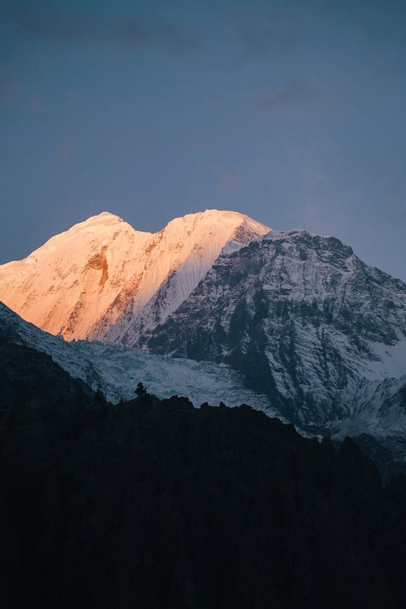
Один из самых красивых и медитативных треков мира.
Программа и стоимостьПройдём 4 климатические зоны — от диких джунглей до заснеженных вершин и перевалов, поднимемся выше 5000 м и увидим величественные восьмитысячники.
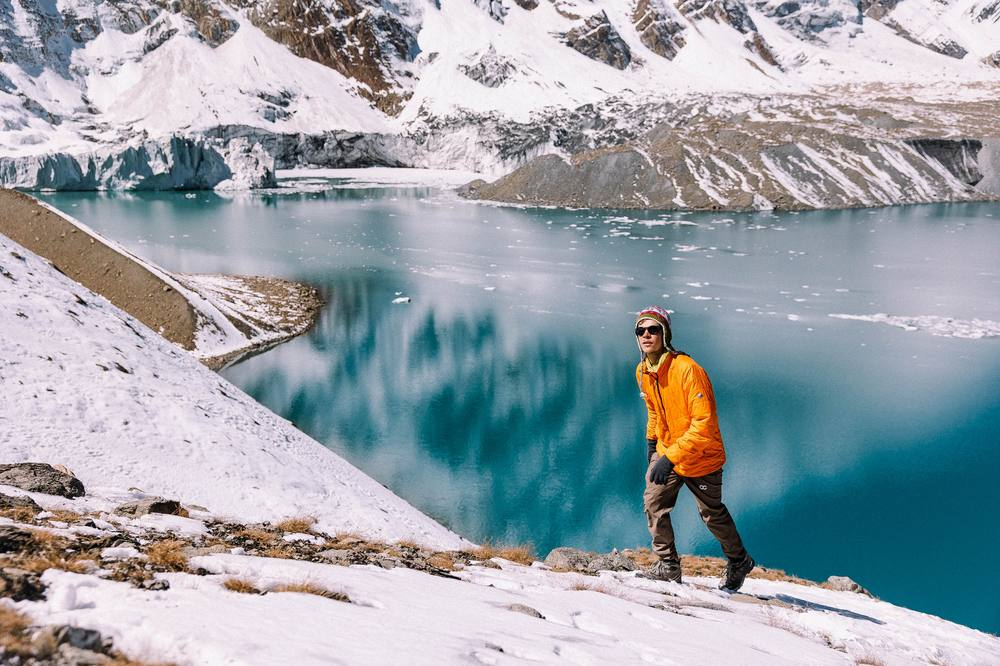
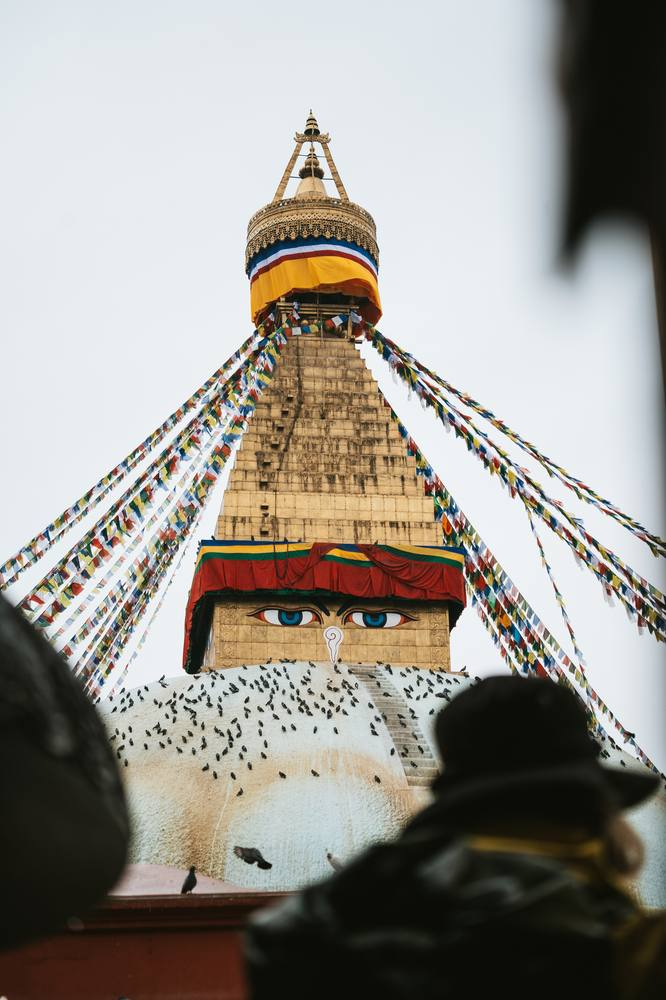
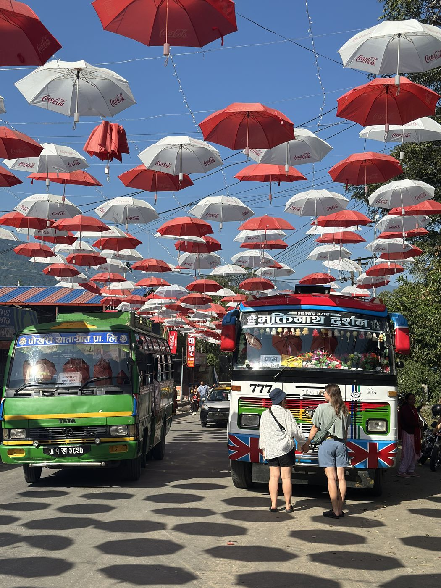
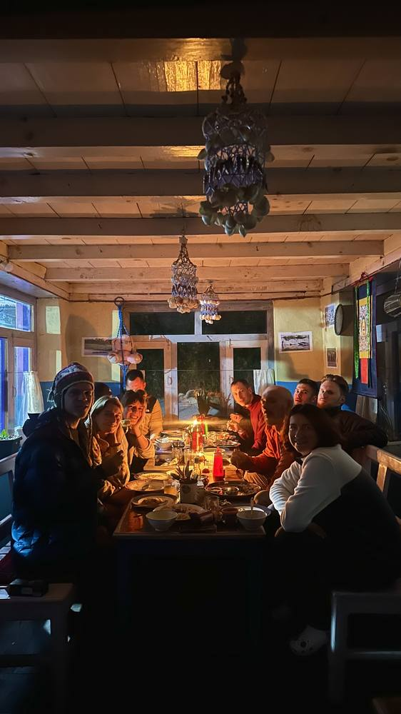
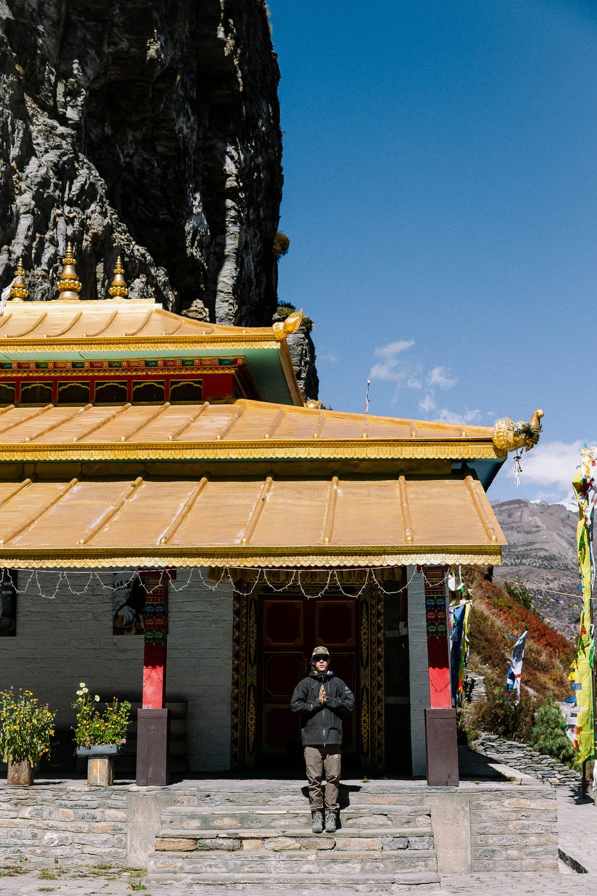
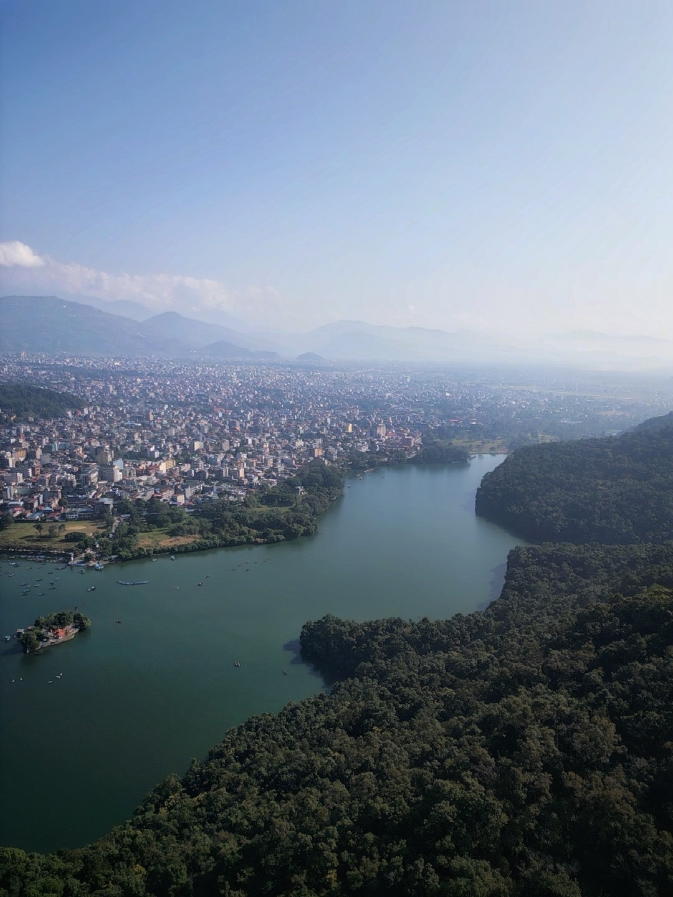
Весной увидим, как расцветают рододендроны, магнолии и яблони. Осенью маршрут окрашивается в золотые и красные оттенки. С нами едет профессиональный фото-видеооператор.
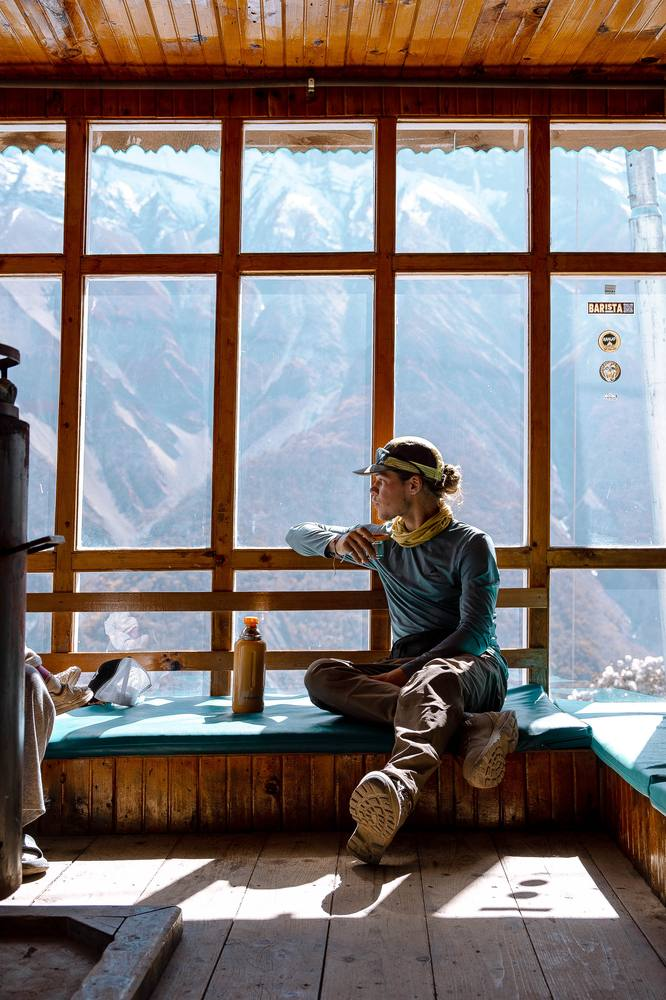
Здесь голова очищается от привычных дел, звонков и городской суеты. Начинаешь жить уже по-другому.
Мы идём небольшой группой: вместе завтракаем, вместе поднимаемся, вместе встречаем закаты. За семнадцать дней случайные попутчики превращаются в людей, с которыми потом хочется ехать дальше.
Вернёшься обратно точно совсем другим.
Захватывающие виды. Каждый день новые пейзажи: от тропиков и джунглей до ледников и снежных вершин.
Перевалы и озёра. Перевал Торонг Ла, 5416 м, — один из самых высоких пеших перевалов мира. Озеро Тиличо, 4919 м, — жемчужина Гималаев.
Атмосфера Непала. Культура, пуджи и церемонии, древние храмы и монастыри, знакомство с местными жителями.
Покхара на мотоциклах. Royal Enfield, горные серпантины, каньоны и закаты с лучших видовых точек на Гималаи.
А ещё… Баня, массаж и полное погружение в местную кухню вместе с шеф-поваром.
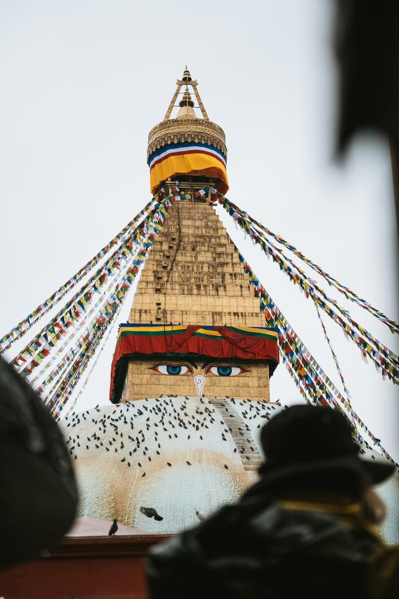
Встреча участников в аэропорту и заселение в отель в районе Тамель. Идём гулять по городу, доходим до ступы Боднатх — самого святого места города, сходим кору, попьём масалу. Вечером ужин с группой: знакомимся с участниками и гидами, рассказываем о программе и о том, что нас ждёт, смотрим наш фильм и вручаем фирменный мерч «Тепло Земли». Заранее проверим личное снаряжение каждого и при необходимости закупим недостающее.
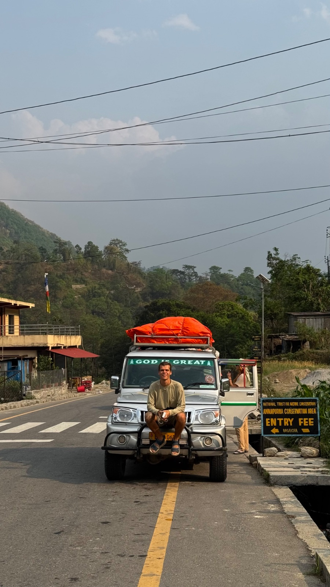
Рано утром нас забирают японские джипы, и мы едем без пересадок прямо до Дарапани. Нас ждёт целый день дороги: живописные холмы, рисовые террасы, горные серпантины, джунгли и водопады. Обедаем по пути. К вечеру приезжаем в Дарапани, нашу первую горную деревню на высоте 1900 м, где отдыхаем и готовимся к завтрашнему дню. Вечером совместный ужин и брифинг.
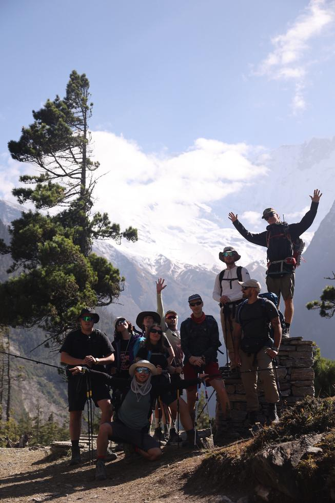
Отсюда начинается наш путь пешком: подвесные мосты, высокие водопады и бурные реки вдоль Марсъянди. Тропа идёт сквозь сосновые леса и храмы, появляются первые виды на заснеженные семи- и восьмитысячники, которые дальше будут сопровождать нас весь трек. В Чаме нас ждут горячие источники.
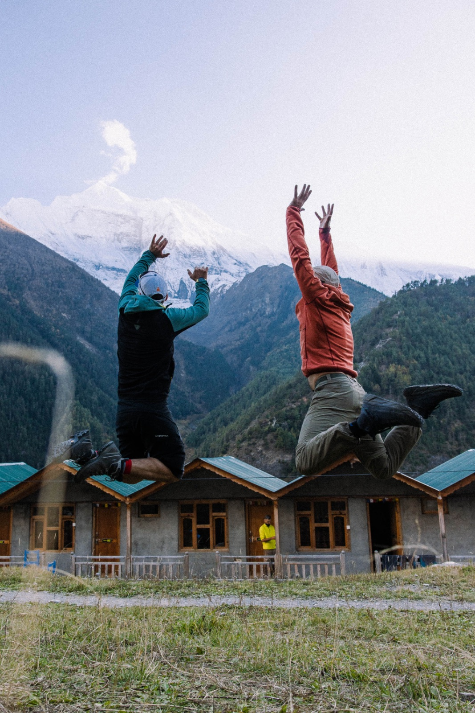
Ландшафт постепенно меняется на инопланетный: гигантские каменные стены, сосновые леса и панорамы на Ламджунг Химал и Аннапурну II. По пути заходим на яблочную плантацию в Бхратанге: свежевыжатый сок, яблочные пончики, штрудель и сидр. В Верхнем Писанге заселяемся в уютный местный лодж с флажками и шикарным видом на Аннапурну II.
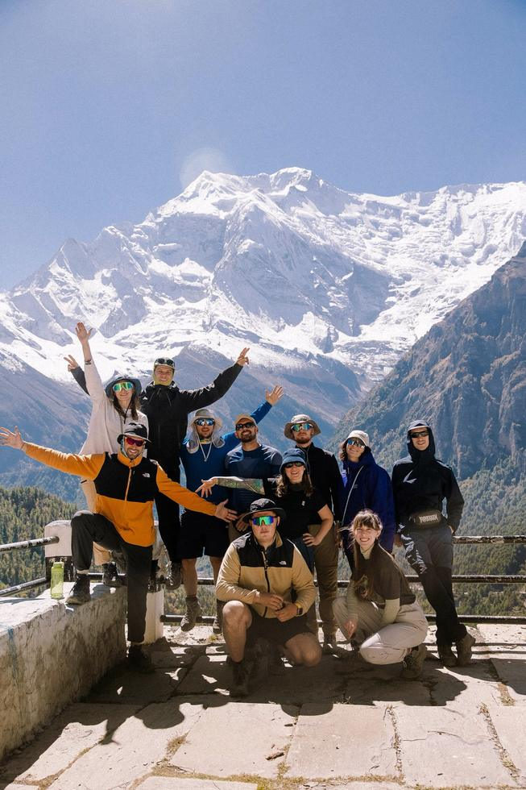
Длинный переход с видами: меняется климатическая зона и открывается главный заснеженный хребет — Аннапурна III, II и IV и долина Мананга. Спускаемся в большую деревню Мананг, где проведём следующие 3 дня. Радиальных выходов в этот день нет.
Идём к подножью Аннапурны III и подходим к леднику великой горы как можно ближе. Посещаем священную пещеру Миларепы: поднимаемся к ней и видим место, где медитировал великий йогин. По возвращении, по желанию, баня и отдых, либо баня на следующий день.
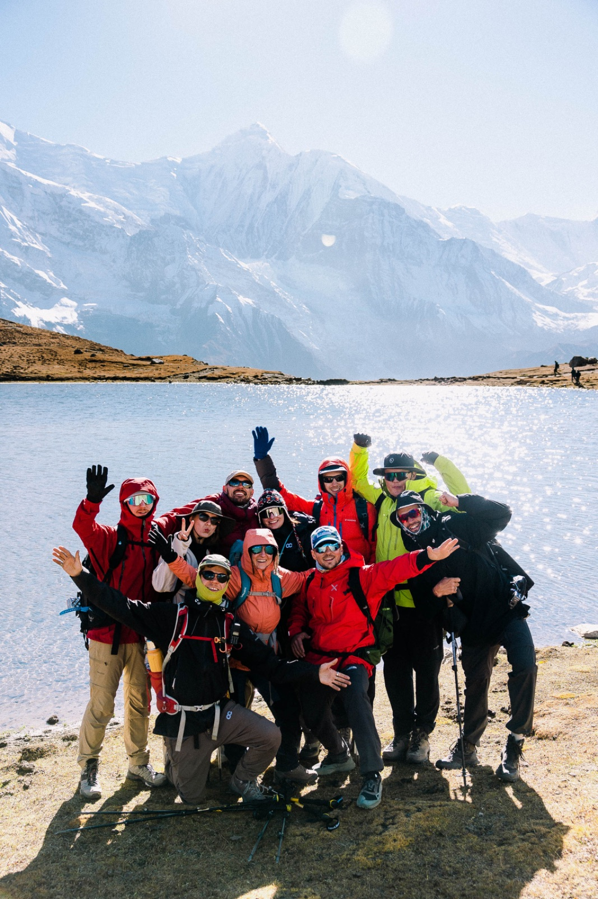
Решаем по погоде и состоянию группы. Либо акклиматизационный радиальный выход к озеру Айс Лейк на 4600 м, либо полный день отдыха: лёгкая прогулка к озеру Гангапурна, ступа и закат над всей долиной. День нужен, чтобы восстановиться и набраться сил перед длинными переходами и подъёмом к Тиличо.
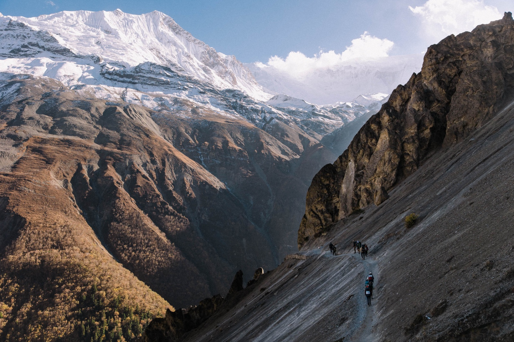
Один из самых красивых участков маршрута: мы уходим с основной тропы кольца Аннапурны и идём к озеру Тиличо по отвесным каменным склонам. Марсианские пейзажи и открытые панорамы. Приходим в лагерь, ужинаем и рано ложимся спать: завтра ранний подъём на озеро.
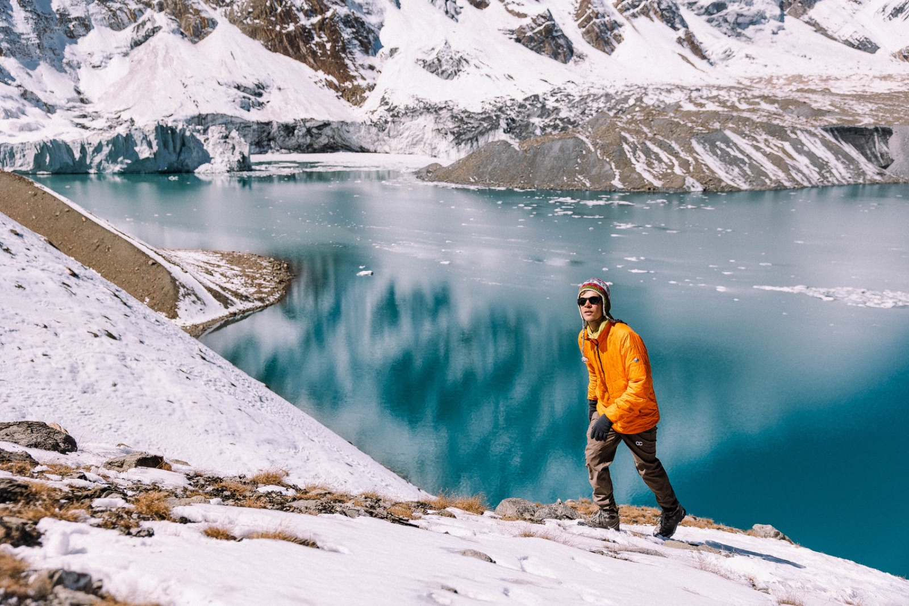
Выход в 4 утра с фонариками. Встречаем рассвет над Манаслу и поднимаемся до отметки 5000 м — наши первые «пять тысяч». Нас ждёт одно из самых красивых мест на треке. Весной озеро слегка заснежено, осенью полностью оттаивает: бирюзовая вода и ледники. Возвращаемся в базовый лагерь и отдыхаем.
Выспавшись после Тиличо и позавтракав, идём в сторону другой долины. Обедаем в Шри Кхарке с видом на весь хребет Аннапурны, затем спускаемся в соседнюю долину, в Як Кхарку. Ночуем в уютном лодже, в деревне есть свежая пекарня.
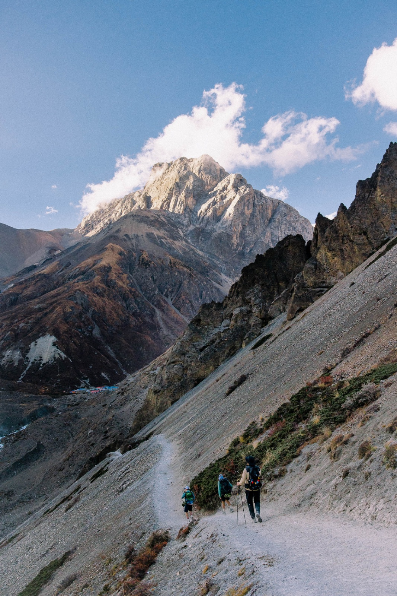
Короткий переход в базовый лагерь перевала Торонг Ла. Отдыхаем, обедаем. Рано ложимся спать: завтра штурм перевала.
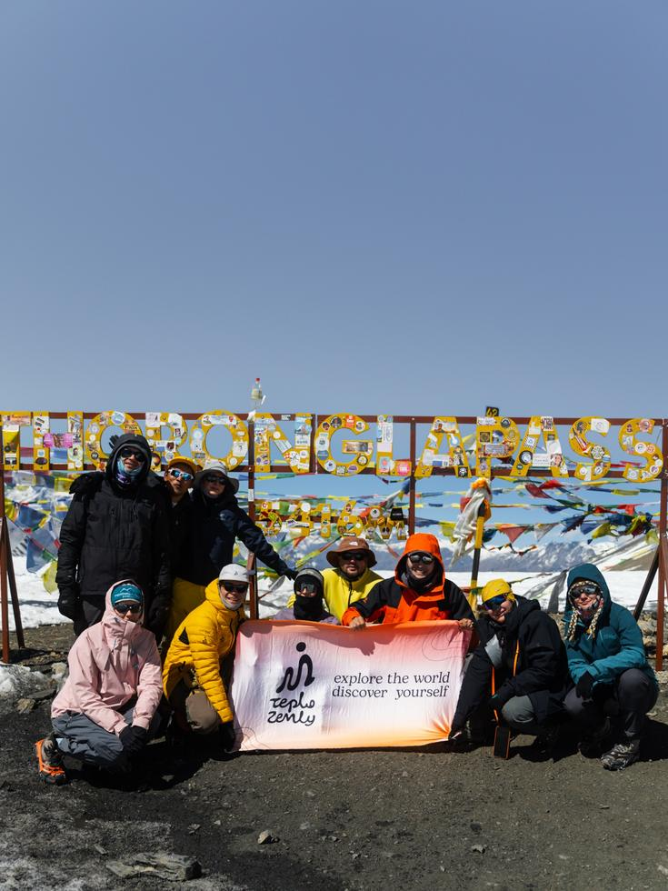
Кульминация всего маршрута. Подъём в 4 утра, рассвет с видом на Аннапурну, молитвенные флаги на перевале, фотосессия и чай. Подъём долгий и затяжной, но он того стоит. Затем длинный спуск в Муктинатх — священное место, где посетим два храма, буддийский и индуистский. Вечером русская баня и ужин: борщ с пампушками.
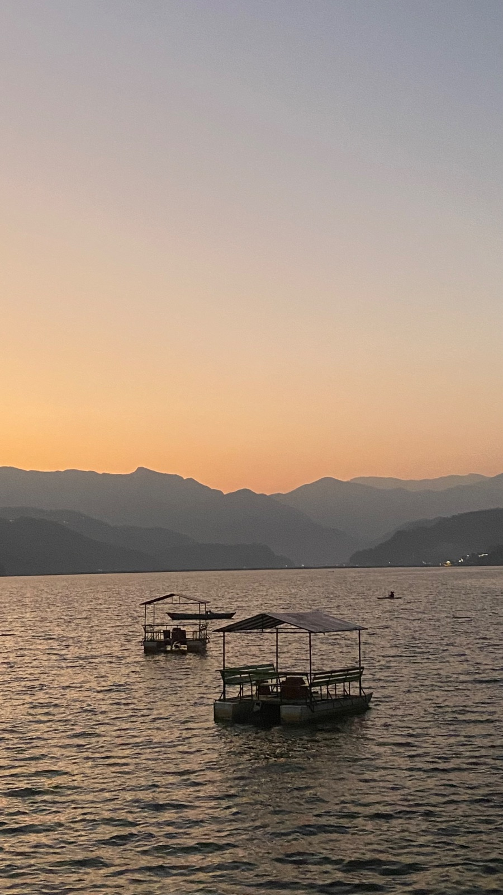
Рано утром нас забирают джипы, и мы отправляемся в Покхару. К закату мы уже в Покхаре и отдыхаем на берегу озера Фева.
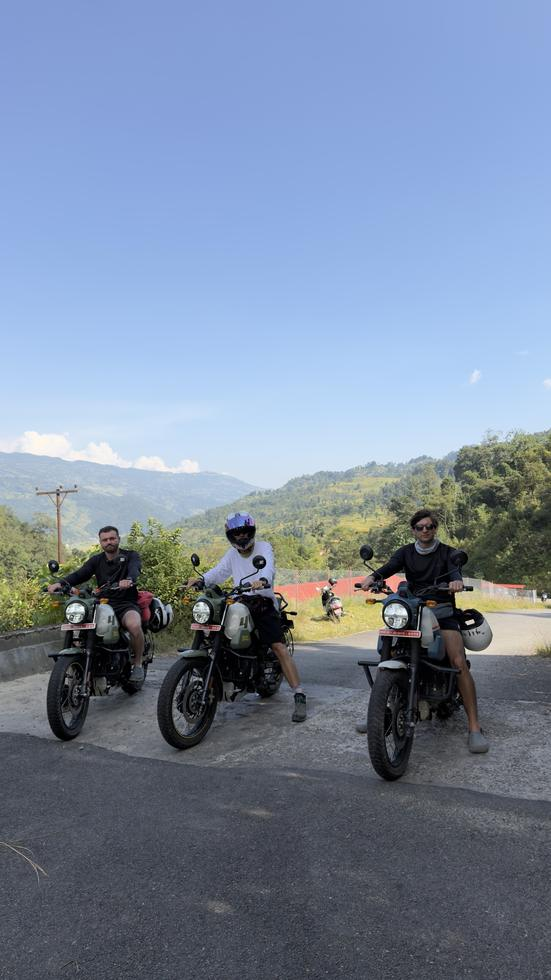
Берём мотоциклы Royal Enfield и едем встречать рассвет на холм Саранкот: вид на священную гору Мачапучаре, 6998 м, весь хребет Аннапурны и восьмитысячники Дхаулагири и Манаслу. На закате едем к Пагоде мира и статуе Большого Шивы.
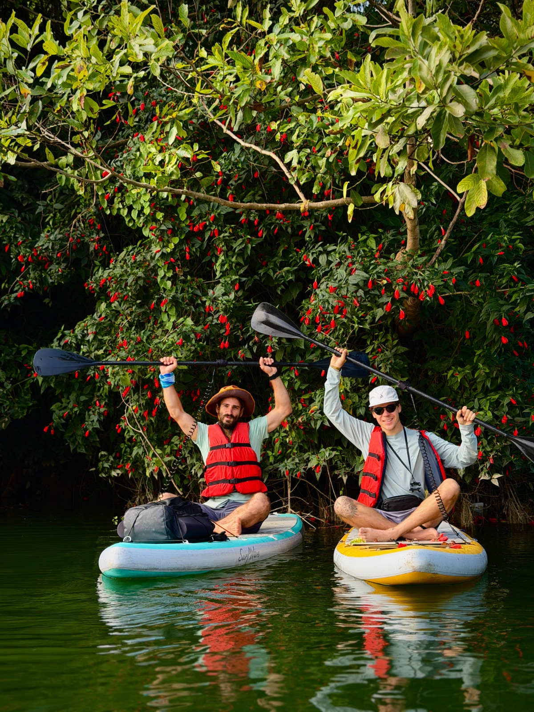
Утром на мотоциклах едем на каньоны: купаемся у водопадов, устраиваем пикник и чаепитие. На закате катаемся на сапах по озеру. Вечером по желанию баня, массаж, сауна. В конце дня торжественный ужин: награждение участников грамотами, подведение итогов и благодарности.
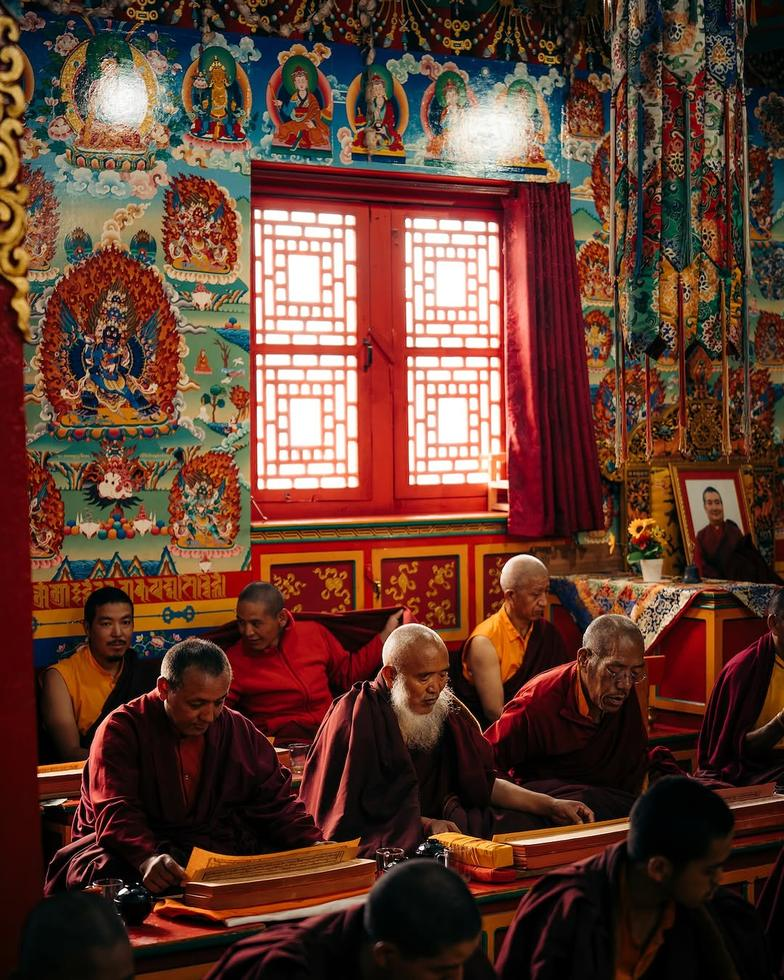
Летим на самолёте: всего 25 минут красивейшего полёта с видом на Гималаи. Остаётся целый день. Посещаем обезьяний храм Сваямбунатх и встречаем закат там же, с видом на весь Катманду. Затем идём в Пашупатинатх на огненную церемонию Арати — место, где лицом к лицу встречаются жизнь и смерть.
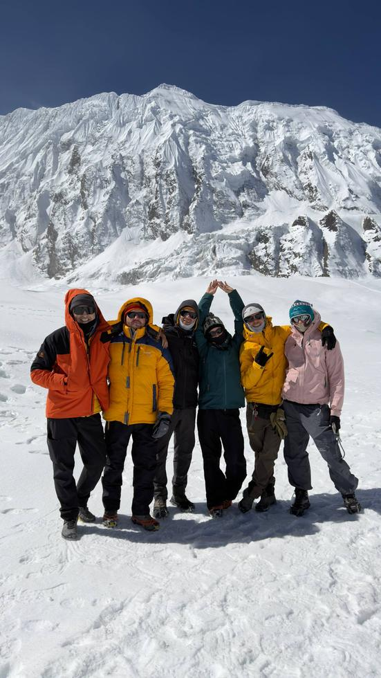
Прощание с группой, трансфер в международный аэропорт и вылет домой. Вылет возможен в любое время дня, выселение из отеля до 12 часов. Тем, кто остаётся, можно по желанию посетить ещё пару достопримечательностей.
Список снаряжения и рекомендации по подготовке высылаем в ответ на заявку.
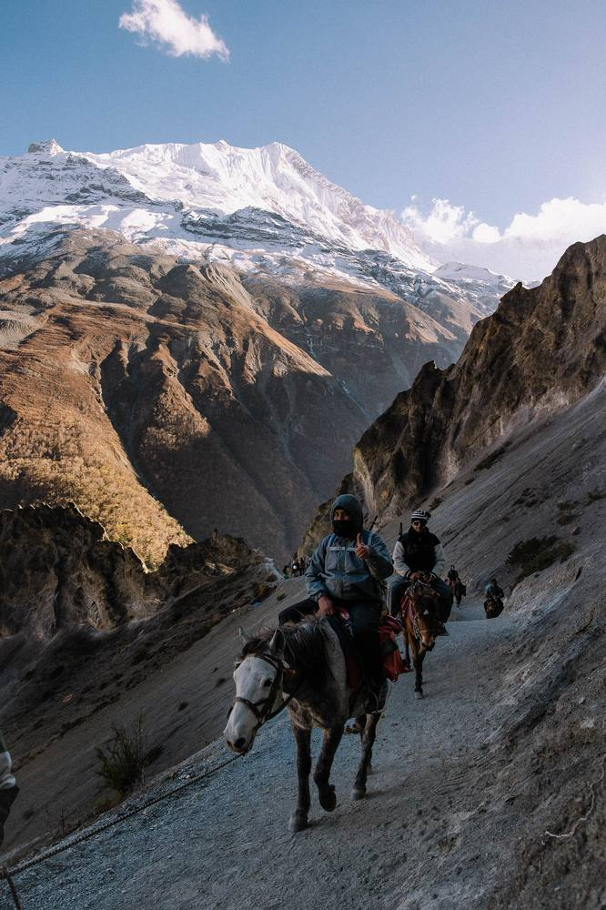
Высоту набираем постепенно. Идём не спеша — дышим, смотрим на Гималаи, останавливаемся на перерывы и обеды.
Маршрут построен так, чтобы дать телу время адаптироваться: от старта на 1900 м мы поднимаемся к перевалу десять дней, с днями акклиматизации в Мананге и радиальными выходами к озёрам.
Специальной альпинистской подготовки не требуется — нет технических участков, верёвок и кошек. Но месяц лёгких тренировок перед треком сделает ваш путь заметно легче.
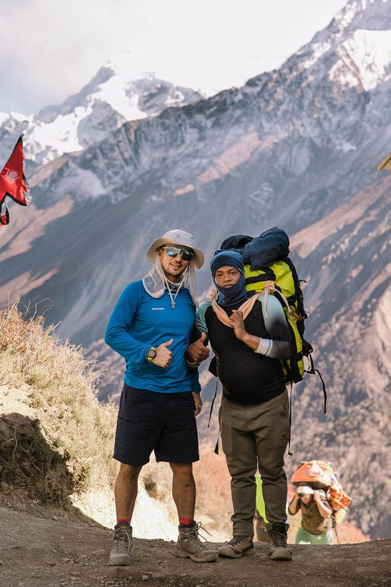
Основную часть багажа несут портеры. Ты идёшь налегке — только маленький рюкзак 5—7 кг с тем, что нужно в течение дня.
В дневном рюкзаке: вода, тёплый слой, дождевик, перекус, камера. Всё остальное утром уходит с портерами и ждёт вас вечером в лоджии.
Один портер берёт вещи двух участников, до 30 кг. Входит в стоимость тура.
Но и один из главных центров Буддизма в мире. Здесь находится одна из крупнейших сферических буддийских ступ — BOUDHANATH.
На треке мы не проходим мимо: заходим в монастыри, знакомимся с монахами, попадаем на настоящие церемонии. Сидим вместе с ними, медитируем, слушаем, как здесь зарождался Буддизм.
Апрель и октябрь — лучшие месяцы для треккинга. Весной расцветают рододендроны, магнолии и яблони, осенью маршрут окрашивается в золотые и красные оттенки, а вершины стоят без дымки.
Тиличо — одно из самых высокогорных озёр мира. Айс Лейк — акклиматизационный выход над Манангом с видом на весь массив Аннапурны.
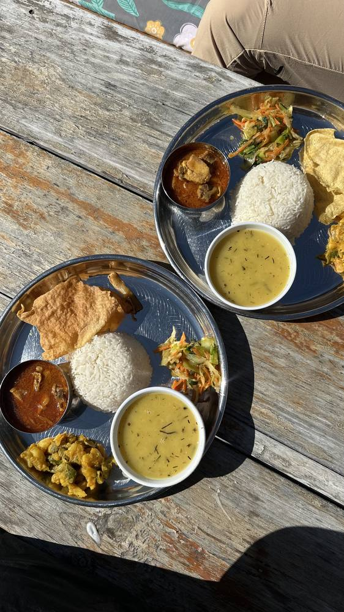
Погрузимся в местную гастрономию: познакомимся с поварами, расскажем, что и как здесь готовят.
Дал-бат — основа рациона: рис, чечевичный суп, овощи и добавка без ограничений. Тукпа — густой суп с лапшой, который спасает на высоте. Вегетарианские и мясные варианты есть везде.
Уютные лоджии с удобствами: кровати с матрасами, тёплые одеяла и подушки, горячий душ, Wi-Fi.
Большая обеденная зона с печкой — вечером собираемся все вместе, вкусно ужинаем, играем в настолки и провожаем закаты с видом на Гималаи. В Катманду и Покхаре — отели 4-5★ с завтраками.
Все лоджии, отели и трансферы мы отбирали лично за пять экспедиций в этом регионе.
Берём мотоциклы Royal Enfield и катаемся по горным серпантинам, каньонам и деревням. Заезжаем на статую Big Shiva и World Peace Pagoda.
Катаемся по озеру Фева на сапах и лодках. Восстанавливаемся: баня, массаж, отель с бассейном на крыше и спа.
Мы давно и детально изучаем культуру Непала и знаем, как погрузить вас в те самые Гималаи и Буддизм.
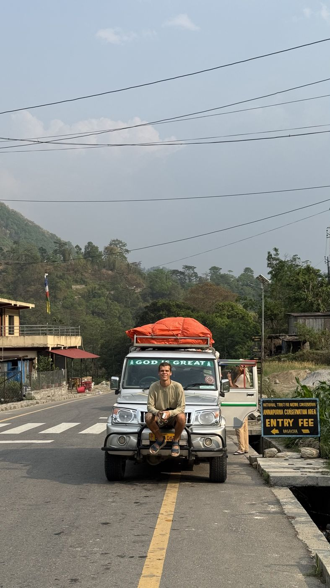
Индивидуальная программа
на 1—2 человека — $7000
Отмечайте, что уже собрали: 0 из 32
Перед выездом проверяем снаряжение каждого участника и при необходимости докупаем недостающее в Катманду. Поможем с подбором и подскажем, что можно взять в аренду на месте.
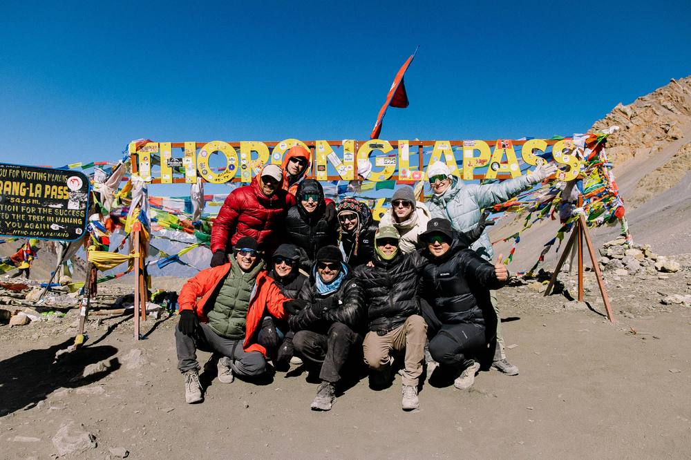
Напиши «НЕПАЛ» — пришлём подробную программу по дням,
список снаряжения и ответим на все вопросы.